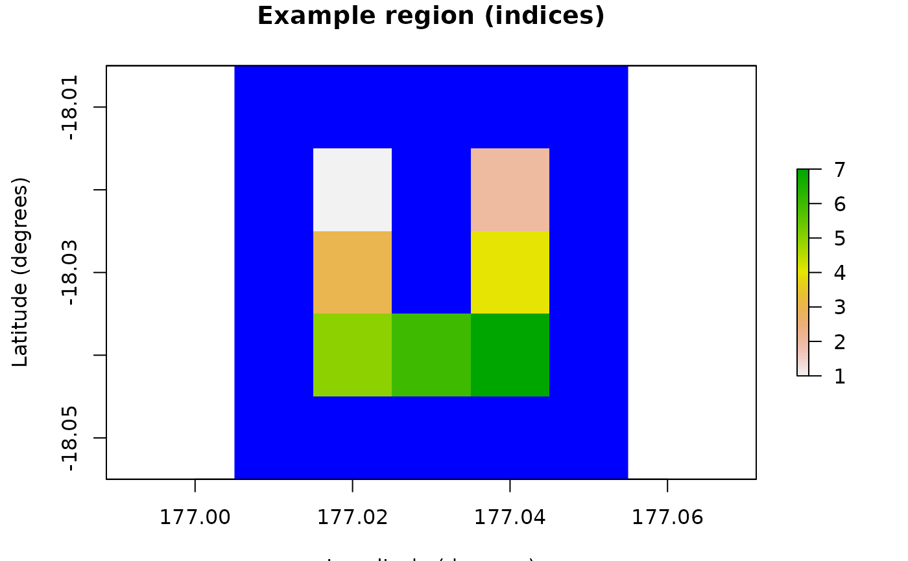

R6 class for encapsulating and dynamically generating
spatially-explicit simulation results, as well as optional re-generated
Generator outputs.
Super classes
poems::GenericClass -> poems::GenericModel -> poems::SpatialModel -> SimulationResults
Active bindings
model_attributesA vector of model attribute names.
regionA
Region(or inherited class) object specifying the study region.coordinatesData frame (or matrix) of X-Y population (WGS84) coordinates in longitude (degrees West) and latitude (degrees North) (get and set), or distance-based coordinates dynamically returned by region raster (get only).
time_stepsNumber of simulation time steps.
burn_in_stepsOptional number of initial 'burn-in' time steps to be ignored.
occupancy_maskOptional binary mask array (matrix), data frame, or raster (stack) for each cell at each time-step of the simulation including burn-in.
allNested simulation results for all cells.
parentParent simulation results for individual cells.
defaultDefault value/attribute utilized when applying primitive metric functions (e.g. max) to the results.
attribute_aliasesA list of alternative alias names for model attributes (form:
alias = "attribute") to be used with the set and get attributes methods.error_messagesA vector of error messages encountered when setting model attributes.
warning_messagesA vector of warning messages encountered when setting model attributes.
Methods
Method new()
Initialization method sets attributes from a results list or file, and sets object attributes individually and/or from a list.
Usage
SimulationResults$new(results = NULL, parent = NULL, ...)Method new_clone()
Creates a new (re-initialized) object of the current (inherited) object class with optionally passed parameters.
Method get_attribute_names()
Returns an array of all attribute names including public and private model attributes, as well as attached attributes, error and warning messages.
Method get_attributes()
Returns a list of values for selected attributes or attribute aliases (when array of parameter names provided) or all attributes (when no params).
Method set_attributes()
Sets given attributes (optionally via alias names) individually and/or from a list.
Usage
SimulationResults$set_attributes(params = list(), ...)Examples
# U Island example region
coordinates <- data.frame(
x = rep(seq(177.01, 177.05, 0.01), 5),
y = rep(seq(-18.01, -18.05, -0.01), each = 5)
)
template_raster <- Region$new(coordinates = coordinates)$region_raster # full extent
template_raster[][-c(7, 9, 12, 14, 17:19)] <- NA # make U Island
region <- Region$new(template_raster = template_raster)
raster::plot(region$region_raster,
main = "Example region (indices)",
xlab = "Longitude (degrees)", ylab = "Latitude (degrees)",
colNA = "blue"
)

# Sample results occupancy (ignore cell 2 in last 3 time steps)
occupancy_raster <- region$raster_from_values(array(1, c(7, 13)))
occupancy_raster[region$region_indices][2, 11:13] <- 0
occupancy_raster[region$region_indices]
#> layer.1 layer.2 layer.3 layer.4 layer.5 layer.6 layer.7 layer.8 layer.9
#> [1,] 1 1 1 1 1 1 1 1 1
#> [2,] 1 1 1 1 1 1 1 1 1
#> [3,] 1 1 1 1 1 1 1 1 1
#> [4,] 1 1 1 1 1 1 1 1 1
#> [5,] 1 1 1 1 1 1 1 1 1
#> [6,] 1 1 1 1 1 1 1 1 1
#> [7,] 1 1 1 1 1 1 1 1 1
#> layer.10 layer.11 layer.12 layer.13
#> [1,] 1 1 1 1
#> [2,] 1 0 0 0
#> [3,] 1 1 1 1
#> [4,] 1 1 1 1
#> [5,] 1 1 1 1
#> [6,] 1 1 1 1
#> [7,] 1 1 1 1
# Simulation example results
example_results <- list(abundance = region$raster_from_values(
t(apply(
matrix(11:17), 1,
function(n) c(rep(n, 3), round(n * exp(-(0:9) / log(n))))
))
))
example_results$abundance[region$region_indices]
#> layer.1 layer.2 layer.3 layer.4 layer.5 layer.6 layer.7 layer.8 layer.9
#> [1,] 11 11 11 11 7 5 3 2 1
#> [2,] 12 12 12 12 8 5 4 2 2
#> [3,] 13 13 13 13 9 6 4 3 2
#> [4,] 14 14 14 14 10 7 4 3 2
#> [5,] 15 15 15 15 10 7 5 3 2
#> [6,] 16 16 16 16 11 8 5 4 3
#> [7,] 17 17 17 17 12 8 6 4 3
#> layer.10 layer.11 layer.12 layer.13
#> [1,] 1 1 0 0
#> [2,] 1 1 0 0
#> [3,] 1 1 1 0
#> [4,] 1 1 1 0
#> [5,] 2 1 1 1
#> [6,] 2 1 1 1
#> [7,] 2 1 1 1
# Simulation results object
sim_results <- SimulationResults$new(
region = region,
time_steps = 13,
burn_in_steps = 3,
occupancy_mask = occupancy_raster
)
# Clone (for each simulation results)
results_clone <- sim_results$new_clone(results = example_results)
results_clone$get_attribute("abundance")
#> class : RasterBrick
#> dimensions : 5, 5, 25, 10 (nrow, ncol, ncell, nlayers)
#> resolution : 0.01, 0.01 (x, y)
#> extent : 177.005, 177.055, -18.055, -18.005 (xmin, xmax, ymin, ymax)
#> crs : +proj=longlat +ellps=WGS84 +towgs84=0,0,0,0,0,0,0 +no_defs
#> source : memory
#> names : layer.4, layer.5, layer.6, layer.7, layer.8, layer.9, layer.10, layer.11, layer.12, layer.13
#> min values : 11, 7, 5, 3, 2, 1, 1, 0, 0, 0
#> max values : 17, 12, 8, 6, 4, 3, 2, 1, 1, 1
#>
results_clone$get_attribute("abundance")[region$region_indices]
#> layer.4 layer.5 layer.6 layer.7 layer.8 layer.9 layer.10 layer.11 layer.12
#> [1,] 11 7 5 3 2 1 1 1 0
#> [2,] 12 8 5 4 2 2 1 0 0
#> [3,] 13 9 6 4 3 2 1 1 1
#> [4,] 14 10 7 4 3 2 1 1 1
#> [5,] 15 10 7 5 3 2 2 1 1
#> [6,] 16 11 8 5 4 3 2 1 1
#> [7,] 17 12 8 6 4 3 2 1 1
#> layer.13
#> [1,] 0
#> [2,] 0
#> [3,] 0
#> [4,] 0
#> [5,] 1
#> [6,] 1
#> [7,] 1
results_clone$all$get_attribute("abundance")
#> [1] 98 67 46 31 21 15 10 6 5 3
results_clone$get_attribute("all$abundance")
#> [1] 98 67 46 31 21 15 10 6 5 3